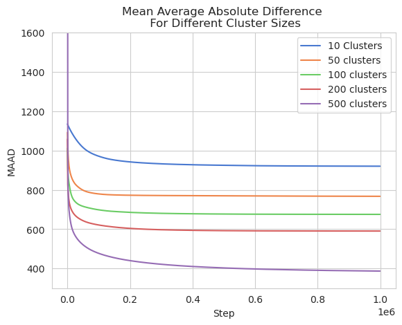

Figures
Network Clustering

OD Estimation Error
Simulation Benchmark

Origin destination estimation based on recorded link flows is a well-studied problem in the literature. This work presents a framework for developing scalable traffic flow digital twins for large transportation networks. We implement a proven, gradient-based OD estimator using PyTorch and validate it within MATSim simulations involving millions of agents. Our open-source framework supports integration with modern AI models for further research. The code and datasets are available at https://github.com/DIRECTLab/MatsimAI.
@inproceedings{peterson2024digitaltwins,
author = {Isaac Peterson and Christopher Allred and Chandler Justice and Mario Harper},
title = {Towards Scalable Traffic Flow Digital Twins for Large Networks with MATSim},
booktitle = {IEEE Conference},
year = {2024},
}